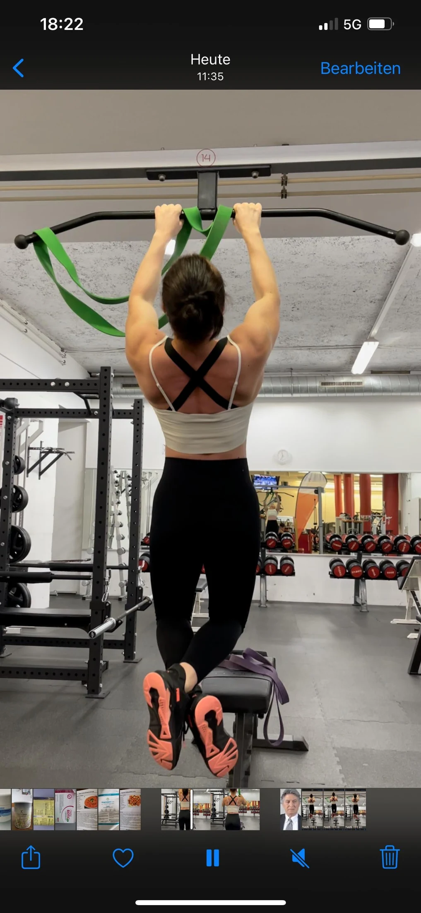

Coaching / Training
Stärker werden.
Auf deine Art.
Vom einzelnen individuellen Trainingsplan bis zur strukturierten Trainingsperiodisierung über zwölf Monate: Dein Training wird auf deinen Trainingsstand, deine Ziele und deinen Alltag abgestimmt.

Individuell auf dich abgestimmt.
Wir stimmen deine Trainingsstruktur auf Ziele, Trainingsstand, Alltag und Bedürfnisse ab. Du kannst einen einzelnen Trainingsplan oder eine längerfristige Periodisierung über bis zu zwölf Monate wählen. Bei der Periodisierung werden aufeinander aufbauende Trainingsphasen geplant und Belastung und Erholung sinnvoll aufeinander abgestimmt.
- Muskelaufbau und Kraft
- Körperkomposition und Leistungssteigerung
- Trainingsstruktur passend zu deinem Alltag
- Berücksichtigung deiner Erfahrung und Möglichkeiten
Einzelne Trainingspläne bis zur Trainingsperiodisierung über 12 Monate · Preis abhängig vom Umfang
Vor Ort oder online.
Beratung anfragen ↗Dein nächster Schritt
Finden wir heraus,
was zu dir passt.
Erzähl mir, wo du stehst und was du verändern möchtest.
Beratungsgespräch anfragen ↗